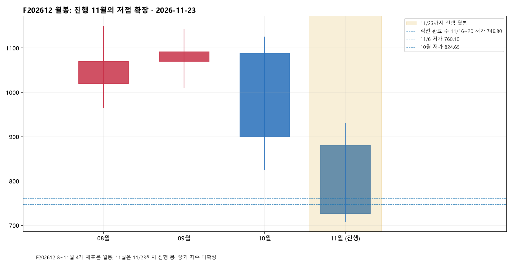
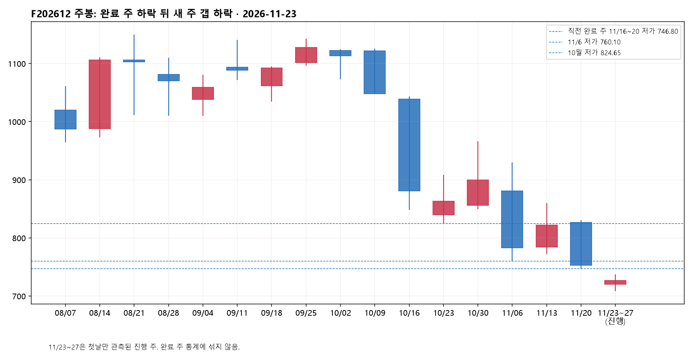
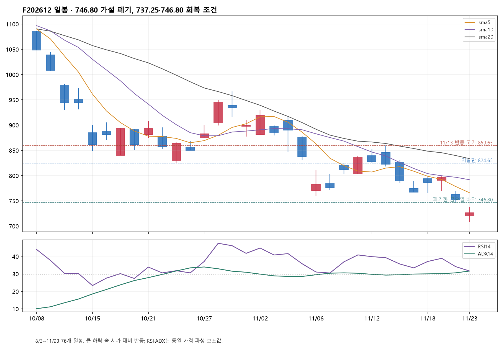
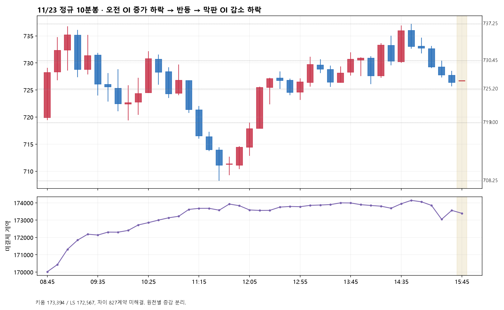
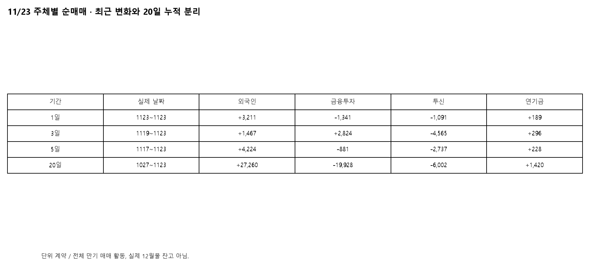
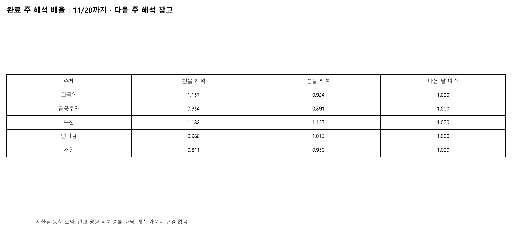
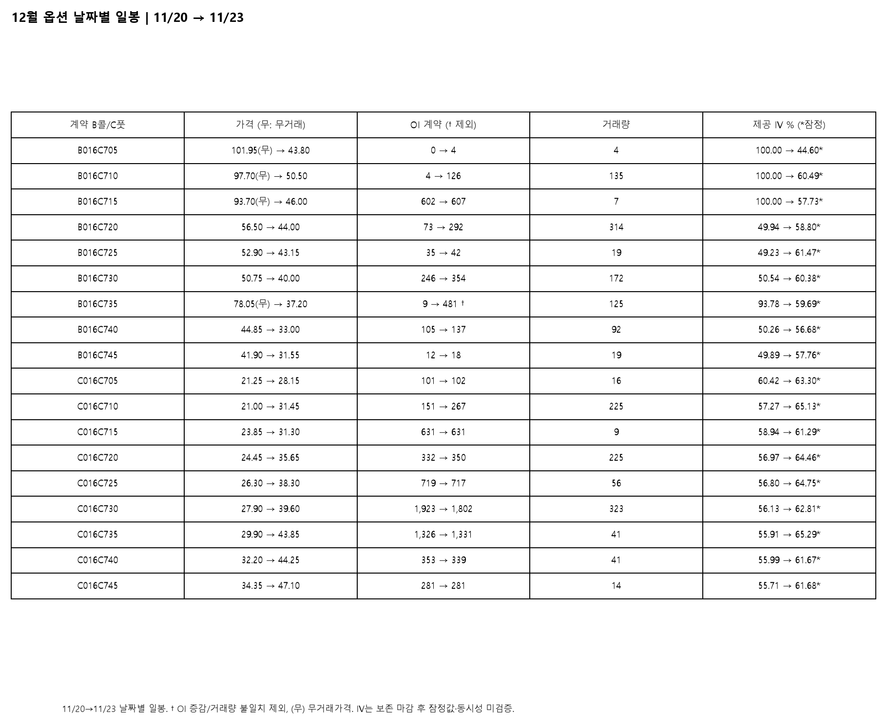

F202612 / A016C000 · 정규장 726.65 · OI 173,394 · 이후 야간 미반영
11/23 F202612 정규장 종가는 726.65, 전일 752.75 대비 -26.10포인트(-3.47%)예요. 시가 719.90 이후에는 +6.75 반등했지만, 일봉은 전일 저점 746.80 아래에서 끝났습니다. 금요일의 746.80 단기 바닥 대안은 오늘 갭 하락으로 폐기했고, 상위 하락 우위는 유지합니다. 다음 정규장에서는 725.20~725.65의 10분봉 재지지와 730.45 돌파·재지지가 함께 나오면 734.65~737.25 회복 경로를 확인합니다. 반대로 730.45 아래 재저항 후 725.20을 종가로 이탈·재저항하면 722.35~723.15 → 717.90~719.00 → 708.25~712.85 순서의 재시험이 선호 경로예요. 737.25 위 일봉 마감·다음 눌림 재지지는 당일 약세 경로를 약화시키지만, 746.80~752.75를 회복하기 전에는 큰 하락 구조 전환으로 해석하지 않습니다. 외국인 선물 매수와 프로그램 매수 전환은 회복 근거, 외국인 현물 매도·기관 선물 매도·베이시스 할인 확대는 반대 근거입니다.
직전 공개본은 하락 우위를 유지하면서 750.20 재지지와 754.45 돌파가 있을 때 반등 확장을 확인하고, 746.80 이탈 시 새 바닥 가설을 철회하도록 했어요. 오늘 시가 719.90, 고가 737.25로 그 회복 조건은 정규장 내내 활성화되지 않았고 746.80 바닥 대안은 갭으로 폐기됐습니다. 기존 하락 해석의 유지와 옛 가격에서 실제 매매가 가능했다는 주장은 구분합니다. 선호는 11/13의 859.65 이후 고점·저점이 낮아지는 하락 속 반등의 재실패 경로입니다. 14:45 표시 봉의 737.25 뒤 734.65, 733.15, 730.45, 728.55로 고점이 낮아졌습니다. 730.45 아래 재저항과 725.20 이탈·재저항을 활성 조건으로 삼고, 722.35~723.15와 717.90~719.00의 이전 반응을 차례로 확인한 뒤 708.25~712.85 재시험을 봅니다. 730.45 회복·재지지면 이 단기 경로가 약화되고, 737.25 위 일봉 마감·다음 눌림 재지지면 당일 고점 아래라는 전제를 폐기해 대안 경로로 전환합니다. 새 대안은 오늘 708.25 저점 이후 별도의 회복이 이어지는 경우예요. 725.20~725.65 지지 확인 → 730.45 회복 → 734.65~737.25 돌파 확인 → 746.80~752.75의 갭 구간 회복 순서입니다. 725.20 재이탈은 대안 약화, 708.25 아래 10분봉 마감·반등 재저항은 오늘 저점 회복 가설의 무효화입니다. 746.80 일봉 복귀 후에도 752.75, 760.10, 5일선 765.81 회복을 순서대로 확인합니다. 859.65 이후 하락 구간은 그 고점 재돌파 때 구조 재분류가 필요하지만, 그 전부터 작은 회복의 강약은 별도로 판단합니다. 상위 충격파 연장인지 큰 조정의 말단인지는 하위파 세분·장기 원천 부족으로 차수 미확정이며, 새 저점을 이전 가설의 성공으로 바꾸지 않습니다. 두 경로의 미래 확률은 산정 불가입니다.
전체 만기 지수선물 순매매는 외국인 +3,211, 기관계 -2,117, 개인 -871, 기타법인 -223계약으로 배타적 네 집계 합은 0입니다. 기관 안에서는 금융투자 -1,341, 투신 -1,091, 연기금 +189계약으로 갈렸어요. 금융투자를 기관계에 다시 더하지 않습니다. 원본 0787의 표시 세부 주체 합 -2,227과 기관계 -2,117의 차이 110계약은 두 원본 화면에서 확인했고, 표시 세부 항목이 완전한 분해가 아니므로 임의 주체에 배분하지 않았습니다. 금요일 외국인 -314→오늘 +3,211, 금융투자 +3,997→-1,341, 투신 -4,284→-1,091, 연기금 -192→+189로 바뀌었습니다. 최근 3·5·20일 외국인은 +1,467 / +4,224 / +27,260, 금융투자는 +2,824 / -881 / -19,928, 투신은 -4,565 / -2,737 / -6,002, 연기금은 +296 / +228 / +1,420계약입니다. 외국인 매수 전환은 확인되지만 금융투자 매도 전환과 투신 매도가 겹쳐 매수 주체의 합의로 볼 수 없어요. 이 값은 전체 만기 매매 활동이며 실제 12월물 신규 롱·숏이나 잔존 계약 수가 아닙니다.
현물 KOSPI는 4,708.54(-3.31%), KOSPI200은 730.83(-3.24%)로 전일 대비 하락했습니다. 현물 외국인·투신·연기금은 순매도, 금융투자는 순매수였어요. 외국인은 지수선물·주식선물 매수와 현물 매도가 엇갈리고, 금융투자는 현물 매수와 선물 매도가 엇갈립니다. 헤지·상대가치 거래 가능성과 방향성 매매를 구분할 자료는 부족합니다. 같은 EOD의 KOSPI200 200종목에서 삼성전자·SK하이닉스를 뺀 198종목의 순매수 종목 수는 금융투자 78→151, 기관계 92→128로 늘었고 금액 합계도 순매수로 전환됐습니다. 외국인은 86→67, 투신 114→86, 연기금 98→98개로 외국인·투신·연기금의 나머지 198종목 금액 합계는 계속 순매도예요. 금융투자 현물 매수 확산은 반등 근거지만 시장 전체의 동반 매수로 확대하지 않습니다. SK하이닉스 기타법인 순매수의 구체적 주체·사유도 확인되지 않았습니다. 외국인 주식선물은 오늘 +63,263, 최근 3·5·20일 +74,889 / +7,019 / -289,042계약으로 단기와 중기 흐름이 다릅니다. 프로그램은 오늘 비차익 매수가 차익 매도를 넘어 순매수 전환했으나 3·5·20일 누적은 순매도입니다. 시장 베이시스 -4.18, 제공 이론 베이시스 +1.14, 차이 -5.32포인트로 금요일 -3.95보다 할인이 확대됐습니다. 현물 15:30과 선물 15:45 종가의 비동시 비교이며 실제 동시 차익 기회로 해석하지 않습니다.
같은 정규 10분봉 표시시각 기준 08:45→09:55 가격 728.25→722.45에 OI +2,286, 09:55→11:55 가격 722.45→714.45에 OI +1,529로 오전 하락과 미결제 참여 증가가 겹쳤습니다. 신규 매도 압력과 양립하지만 주체별 신규 숏의 증명은 아닙니다. 11:55→14:35에는 가격 +21.50, OI +112로 가격 반등에 비해 순 OI 변화가 작았어요. 이 창의 양끝만 보고 중간에 포지션 교체가 없었다고 단정하지 않습니다. 14:35→15:25에는 가격 735.95→726.40(-9.55), OI -382로 하락 속 총 미결제 감소가 나타나, 종일 신규 숏이 계속 쌓였다는 설명과 구분됩니다. 15:25→15:45 단일가는 +0.25, OI -170이었습니다. 당일 가격·OI 동행으로 매수자와 매도자, 청산 종류를 분해할 수는 없어요. 오늘 시각별 투자자 순매매 숫자는 독립 검증된 연속 원천이 없어 원본 마감표와 곡선 범위만 사용했고, 11/20 사용자 화면을 오늘 장중 수급으로 재사용하지 않았습니다.
키움 마감 OI는 173,394계약, 오늘 재조회한 전일 168,696 대비 +4,698입니다. 보존된 금요일 원본 169,223 대비로는 +4,171이에요. 같은 전일 15:45 값의 제공 이력이 달라 원인은 미확정이며 원본을 보존했습니다. LS 날짜별 일봉과 보존 마감 후 시세는 172,567, 같은 LS 전일 대비 +3,871로 키움 현재 값과 827계약 차이가 남습니다. OI 증가 방향은 같아도 정확한 증가량은 하나로 합치지 않습니다. OI는 롱과 숏이 한 쌍인 미결제 계약 수라 순매도 주체 합계나 OI 증가분을 신규 숏 유입액으로 바꾸지 않습니다. 일봉 거래량 161,560과 분봉 합계·LS 156,557의 5,003계약 차이로 정확한 VWAP·체결 매물대는 제외합니다. 차월 F202703은 종가 718.45·거래량 103·OI 7,856이며, 전일 OI 7,706에서의 증가 150이 당일 거래량 103보다 커 증감 방향 해석은 제외했어요. 얇은 차월 시세와 주력 12월물을 연속 포지션으로 합산하지 않습니다.
0787 전체 만기 외국인 콜은 -3,986계약·-166억원, 풋은 +2,787계약인데 금액은 -20억원으로 수량과 금액 방향이 다릅니다. 최근 3·5일 콜은 -5,561 / -7,187계약, 풋은 +4,317 / +11,660계약입니다. 서로 다른 행사가·만기의 거래가 섞여 있어 풋 수량 증가를 같은 가격의 신규 헤지 매수액으로 해석할 수 없어요. 별도로 12/10 만기 705~745의 18개 콜·풋 일봉을 11/20과 비교했습니다. 730콜은 가격 50.75→40.00, OI 246→354(+108), 730풋은 27.90→39.60, OI 1,923→1,802(-121)입니다. 풋 상승과 OI 감소가 동시에 나와 옵션 가격 상승 전체를 신규 풋 매수로 설명할 수 없습니다. 720풋은 24.45→35.65, OI 332→350(+18)로 다른 조합입니다. 보존된 마감 후 730콜 제공 IV는 50.54→60.38%, 730풋은 56.13→62.81%였지만 체결별 시각이 미확인이라 확정 종가 IV 변화나 동시 스큐로 쓰지 않습니다. 대표 IV 63.96→76.19%, 대표 콜 51.26→60.20%, 대표 풋 84.71→96.87%의 상승은 별도 대표 계열의 관측입니다. 735콜 OI +472가 거래량 125보다 커 증감 해석을 제외했고, 705·710·715·735콜은 전일 무거래 참고가격이 있어 가격 변화 해석에서도 제외합니다. 원래 감마 체인의 OI 커버리지는 53.57%이고 딜러 보유 부호·동시 시각이 없어 실제 네거티브 감마나 감마플립을 확정하지 않았습니다.
11/23은 월요일 위클리옵션 만기일이며 11월 월물 옵션 만기 11/12, 12월 선물·월물 옵션 만기 12/10과 구분합니다. 공식 계약명세의 월·목 주간물 및 월물 둘째 목요일 규칙과 KRX 공식 휴장일 달력을 대조했어요. 개별 옵션 표는 12월물이고 0787은 전체 만기라 오늘 만기 주간물의 청산·헤지 물량을 별도로 분해할 수 없습니다. 원본 선물은 일반 정규장 08:45~15:45, 현물 마감은 15:30이며 이후 야간은 미반영입니다. 막판 선물 하락과 OI 감소에 만기 관련 조정이 섞였을 가능성은 있으나 만기가 원인이라고 확정하지 않습니다. 다음 정규장 11/24에 현물·프로그램 매수 확산과 730.45·737.25 회복이 이어지는지 확인해야 합니다.
오늘은 새 주의 첫 거래일이므로 11/23~27 주봉·수급은 진행 주로 분리하고, 해석 배율은 완료 주 11/16~20까지의 자료로 계산했습니다. 현물 투신 1.182·외국인 1.157·금융투자 0.954, 선물 투신 1.157·연기금 1.013·외국인 0.924·금융투자 0.891은 제한된 동행 요약이며 영향 비중·승률이 아닙니다. 다음 날 예측 배율은 모두 1.000으로 유지합니다. 10/12~11/23 31거래일의 외국인·투신 동반 매수와 상승 뒤 다음 날 상승은 현물 3/7, 선물 1/3이었고, 동반 매도와 하락 뒤 하락은 현물 7/14, 선물 1/3입니다. 금요일 신호의 다음 완전한 거래일인 오늘 결과가 추가된 관측치이지 미래 확률이 아닙니다. 같은 기간 단순 상승 뒤 상승은 4/12, 하락 뒤 하락은 10/18입니다. 오늘 현물 동반 매도·하락의 다음 날 결과는 대기라 분모에서 제외했고 선물은 외국인 매수·투신 매도가 갈려 동반 신호에 해당하지 않습니다. 소표본·진행 주·수정된 과거 제공값을 명시하고 현재 가중치를 과거 예측 성과로 소급하지 않습니다.
가격은 F202612 개별 계약 8/3~11/23의 76개 일봉과 검증된 정규 10분봉을 사용했습니다. 월·주봉은 같은 일봉에서 재표본화했고 11월과 11/23~27 주는 진행 봉, 직전 11/16~20 주는 완료 봉입니다. 현물·지수선물 동행은 10/12~11/23 31거래일, 최근 3일은 11/19·20·23, 5일은 11/17~23, 20일은 10/27~11/23입니다. 9월 만기 이후 관찰창 9/11~11/23의 48거래일 전체 만기 지수선물 순매매는 외국인 +33,176, 기관계 -31,274, 금융투자 -16,608, 투신 -11,898, 연기금 +1,434계약입니다. 이는 단일 LS 원천의 전체 만기 거래 활동이며 12월물 실제 보유 누적·평단이 아닙니다. 개별 만기 초기잔고·신규/청산 구분이 없어 현재 만기 실제 포지션은 판단 불가예요. 동일 날짜 중복은 대조했고, 전회 공개 근거와 달라진 11/20 현물 수급 네 값 및 두 조회 방식의 현물 차이 75건은 따로 보존했습니다.
KOSPI와 KOSPI200 날짜별 일봉, F202612 일봉의 실제 OHLC를 키움·LS로 대조해 248개 가격 셀이 일치했습니다. 현물 두 지수는 시가보다도 낮게 마감한 반면 선물은 시가보다 반등해, 전일 대비 약세 속 장중 경로는 차이가 있습니다. 기존 국내 다중 시간대·지수 방향 연구는 11/20, 해외 latest는 11/12와 11/20 실패 검증이 섞여 있고 선택 시장환경 연구층은 11/10이어서 현재 판단에서 제외했습니다. 오늘 KOSDAQ·해외 월주일분 차트의 합의를 확인했다고 확대하지 않습니다. 오래된 Squeeze·ADX 연구 신호도 현재 방향 근거로 쓰지 않았습니다. 선물 중심의 검증된 일봉·분봉과 현물 확인값의 범위 안에서만 조건부 시나리오를 제시합니다.

완료 10월 저가 824.65 아래에서 11월 저점 708.25, 현재 마감 726.65로 내려왔어요.

11/16~20 완료 주는 826.50/830.80/746.80/752.75. 새 주 11/23은 719.90/737.25/708.25/726.65이며 진행 중이에요.

직전 공개본은 하락 우위를 유지하면서 750.20 재지지와 754.45 돌파가 있을 때 반등 확장을 확인하고, 746.80 이탈 시 새 바닥 가설을 철회하도록 했어요. 오늘 시가 719.90, 고가 737.25로 그 회복 조건은 정규장 내내 활성화되지 않았고 746.80 바닥 대안은 갭으로 폐기됐습니다. 기존 하락 해석의 유지와 옛 가격에서 실제 매매가 가능했다는 주장은 구분합니다. 선호는 11/13의 859.65 이후 고점·저점이 낮아지는 하락 속 반등의 재실패 경로입니다. 14:45 표시 봉의 737.25 뒤 734.65, 733.15, 730.45, 728.55로 고점이 낮아졌습니다. 730.45 아래 재저항과 725.20 이탈·재저항을 활성 조건으로 삼고, 722.35~723.15와 717.90~719.00의 이전 반응을 차례로 확인한 뒤 708.25~712.85 재시험을 봅니다. 730.45 회복·재지지면 이 단기 경로가 약화되고, 737.25 위 일봉 마감·다음 눌림 재지지면 당일 고점 아래라는 전제를 폐기해 대안 경로로 전환합니다. 새 대안은 오늘 708.25 저점 이후 별도의 회복이 이어지는 경우예요. 725.20~725.65 지지 확인 → 730.45 회복 → 734.65~737.25 돌파 확인 → 746.80~752.75의 갭 구간 회복 순서입니다. 725.20 재이탈은 대안 약화, 708.25 아래 10분봉 마감·반등 재저항은 오늘 저점 회복 가설의 무효화입니다. 746.80 일봉 복귀 후에도 752.75, 760.10, 5일선 765.81 회복을 순서대로 확인합니다. 859.65 이후 하락 구간은 그 고점 재돌파 때 구조 재분류가 필요하지만, 그 전부터 작은 회복의 강약은 별도로 판단합니다. 상위 충격파 연장인지 큰 조정의 말단인지는 하위파 세분·장기 원천 부족으로 차수 미확정이며, 새 저점을 이전 가설의 성공으로 바꾸지 않습니다. 두 경로의 미래 확률은 산정 불가입니다.

같은 정규 10분봉 표시시각 기준 08:45→09:55 가격 728.25→722.45에 OI +2,286, 09:55→11:55 가격 722.45→714.45에 OI +1,529로 오전 하락과 미결제 참여 증가가 겹쳤습니다. 신규 매도 압력과 양립하지만 주체별 신규 숏의 증명은 아닙니다. 11:55→14:35에는 가격 +21.50, OI +112로 가격 반등에 비해 순 OI 변화가 작았어요. 이 창의 양끝만 보고 중간에 포지션 교체가 없었다고 단정하지 않습니다. 14:35→15:25에는 가격 735.95→726.40(-9.55), OI -382로 하락 속 총 미결제 감소가 나타나, 종일 신규 숏이 계속 쌓였다는 설명과 구분됩니다. 15:25→15:45 단일가는 +0.25, OI -170이었습니다. 당일 가격·OI 동행으로 매수자와 매도자, 청산 종류를 분해할 수는 없어요. 오늘 시각별 투자자 순매매 숫자는 독립 검증된 연속 원천이 없어 원본 마감표와 곡선 범위만 사용했고, 11/20 사용자 화면을 오늘 장중 수급으로 재사용하지 않았습니다.

전체 만기 지수선물 순매매는 외국인 +3,211, 기관계 -2,117, 개인 -871, 기타법인 -223계약으로 배타적 네 집계 합은 0입니다. 기관 안에서는 금융투자 -1,341, 투신 -1,091, 연기금 +189계약으로 갈렸어요. 금융투자를 기관계에 다시 더하지 않습니다. 원본 0787의 표시 세부 주체 합 -2,227과 기관계 -2,117의 차이 110계약은 두 원본 화면에서 확인했고, 표시 세부 항목이 완전한 분해가 아니므로 임의 주체에 배분하지 않았습니다. 금요일 외국인 -314→오늘 +3,211, 금융투자 +3,997→-1,341, 투신 -4,284→-1,091, 연기금 -192→+189로 바뀌었습니다. 최근 3·5·20일 외국인은 +1,467 / +4,224 / +27,260, 금융투자는 +2,824 / -881 / -19,928, 투신은 -4,565 / -2,737 / -6,002, 연기금은 +296 / +228 / +1,420계약입니다. 외국인 매수 전환은 확인되지만 금융투자 매도 전환과 투신 매도가 겹쳐 매수 주체의 합의로 볼 수 없어요. 이 값은 전체 만기 매매 활동이며 실제 12월물 신규 롱·숏이나 잔존 계약 수가 아닙니다.

오늘은 새 주의 첫 거래일이므로 11/23~27 주봉·수급은 진행 주로 분리하고, 해석 배율은 완료 주 11/16~20까지의 자료로 계산했습니다. 현물 투신 1.182·외국인 1.157·금융투자 0.954, 선물 투신 1.157·연기금 1.013·외국인 0.924·금융투자 0.891은 제한된 동행 요약이며 영향 비중·승률이 아닙니다. 다음 날 예측 배율은 모두 1.000으로 유지합니다. 10/12~11/23 31거래일의 외국인·투신 동반 매수와 상승 뒤 다음 날 상승은 현물 3/7, 선물 1/3이었고, 동반 매도와 하락 뒤 하락은 현물 7/14, 선물 1/3입니다. 금요일 신호의 다음 완전한 거래일인 오늘 결과가 추가된 관측치이지 미래 확률이 아닙니다. 같은 기간 단순 상승 뒤 상승은 4/12, 하락 뒤 하락은 10/18입니다. 오늘 현물 동반 매도·하락의 다음 날 결과는 대기라 분모에서 제외했고 선물은 외국인 매수·투신 매도가 갈려 동반 신호에 해당하지 않습니다. 소표본·진행 주·수정된 과거 제공값을 명시하고 현재 가중치를 과거 예측 성과로 소급하지 않습니다.

0787 전체 만기 외국인 콜은 -3,986계약·-166억원, 풋은 +2,787계약인데 금액은 -20억원으로 수량과 금액 방향이 다릅니다. 최근 3·5일 콜은 -5,561 / -7,187계약, 풋은 +4,317 / +11,660계약입니다. 서로 다른 행사가·만기의 거래가 섞여 있어 풋 수량 증가를 같은 가격의 신규 헤지 매수액으로 해석할 수 없어요. 별도로 12/10 만기 705~745의 18개 콜·풋 일봉을 11/20과 비교했습니다. 730콜은 가격 50.75→40.00, OI 246→354(+108), 730풋은 27.90→39.60, OI 1,923→1,802(-121)입니다. 풋 상승과 OI 감소가 동시에 나와 옵션 가격 상승 전체를 신규 풋 매수로 설명할 수 없습니다. 720풋은 24.45→35.65, OI 332→350(+18)로 다른 조합입니다. 보존된 마감 후 730콜 제공 IV는 50.54→60.38%, 730풋은 56.13→62.81%였지만 체결별 시각이 미확인이라 확정 종가 IV 변화나 동시 스큐로 쓰지 않습니다. 대표 IV 63.96→76.19%, 대표 콜 51.26→60.20%, 대표 풋 84.71→96.87%의 상승은 별도 대표 계열의 관측입니다. 735콜 OI +472가 거래량 125보다 커 증감 해석을 제외했고, 705·710·715·735콜은 전일 무거래 참고가격이 있어 가격 변화 해석에서도 제외합니다. 원래 감마 체인의 OI 커버리지는 53.57%이고 딜러 보유 부호·동시 시각이 없어 실제 네거티브 감마나 감마플립을 확정하지 않았습니다.
2026-11-23T17:22:40.807031+09:00 · 조건부 해설, 자동 주문·비중 변경 아님